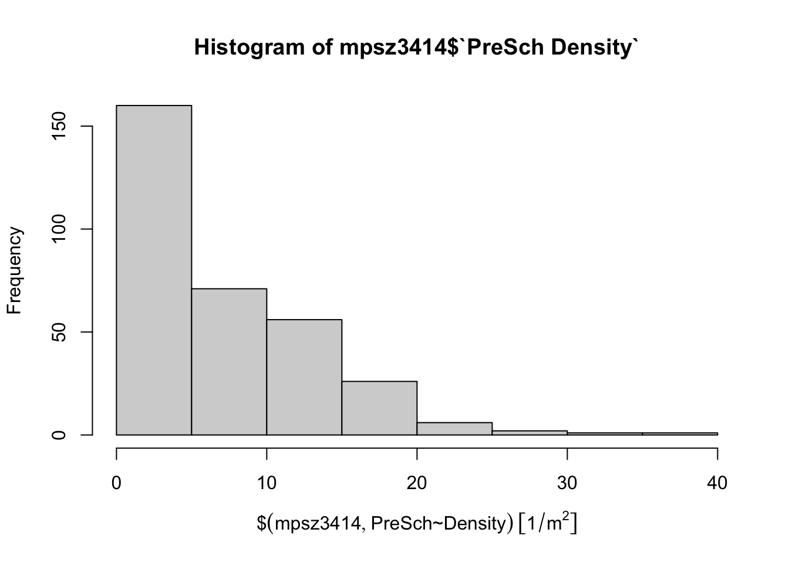
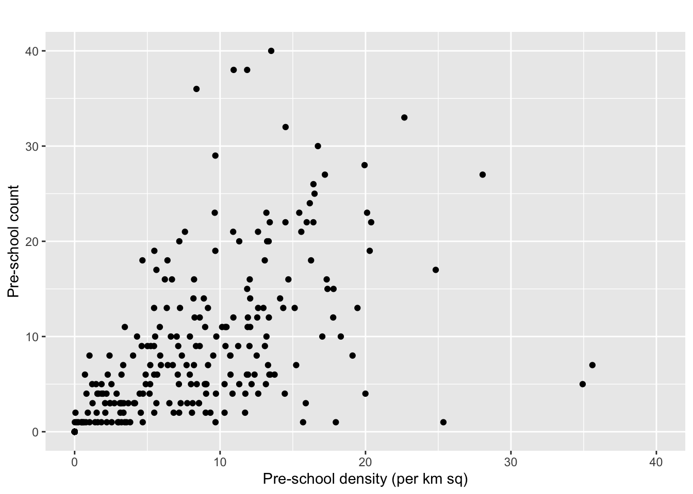
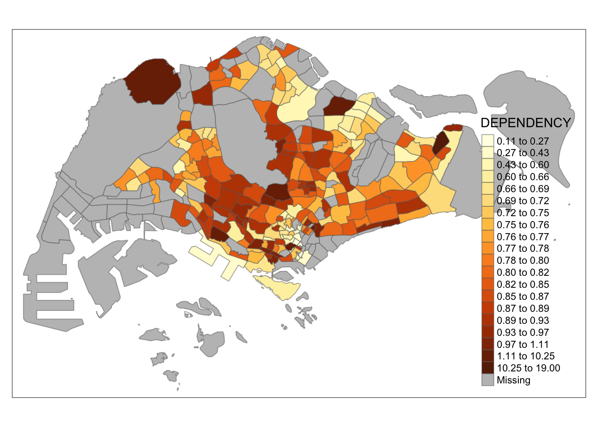
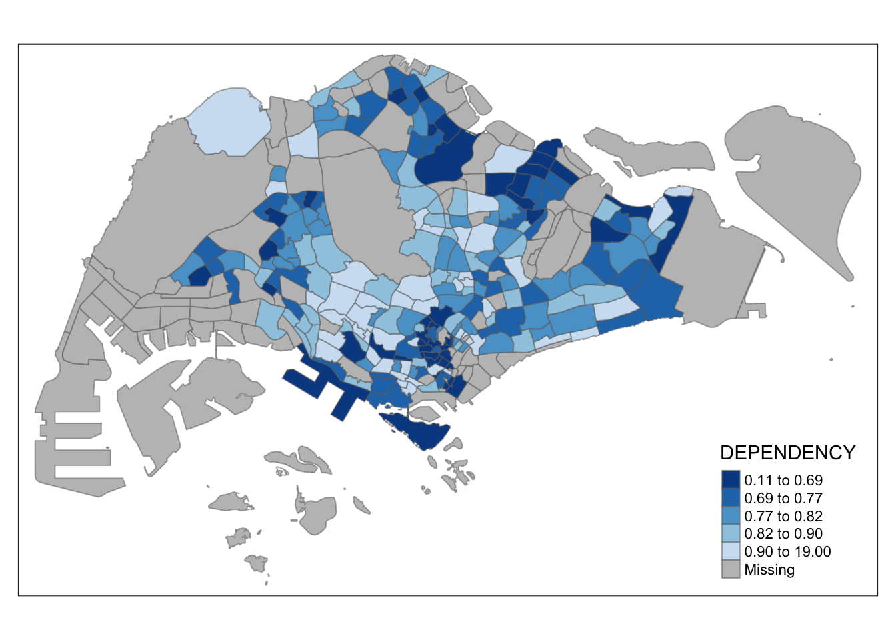
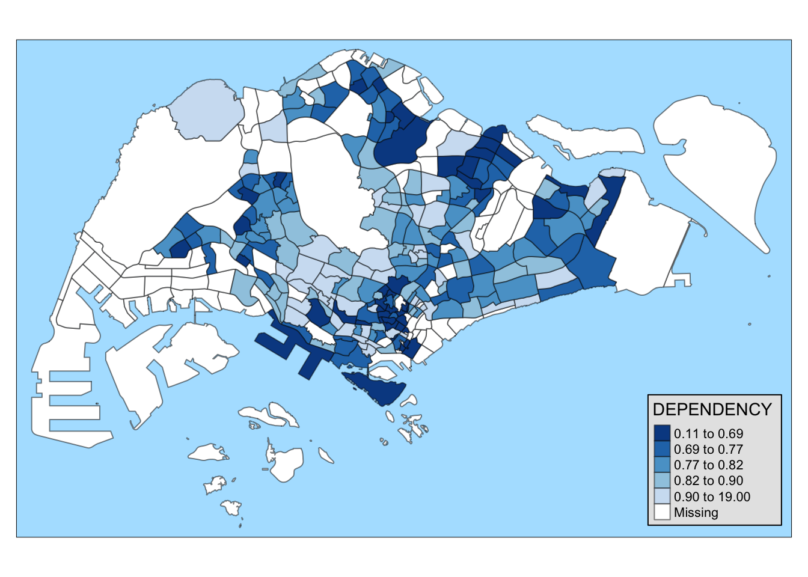
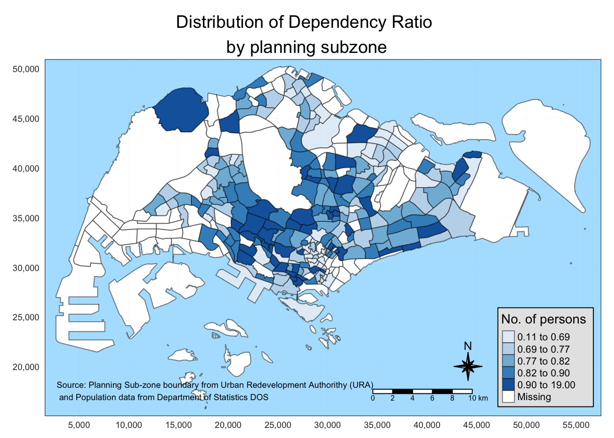
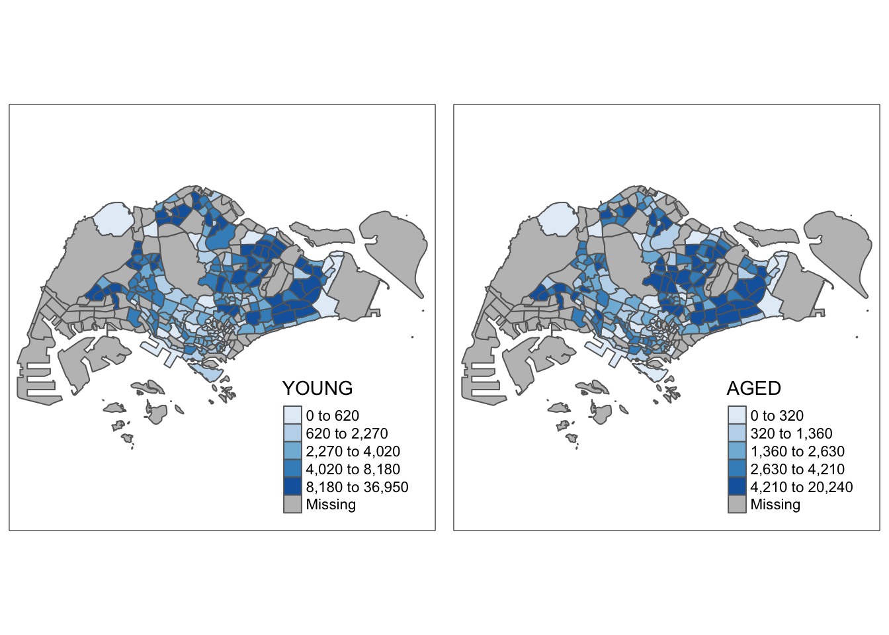
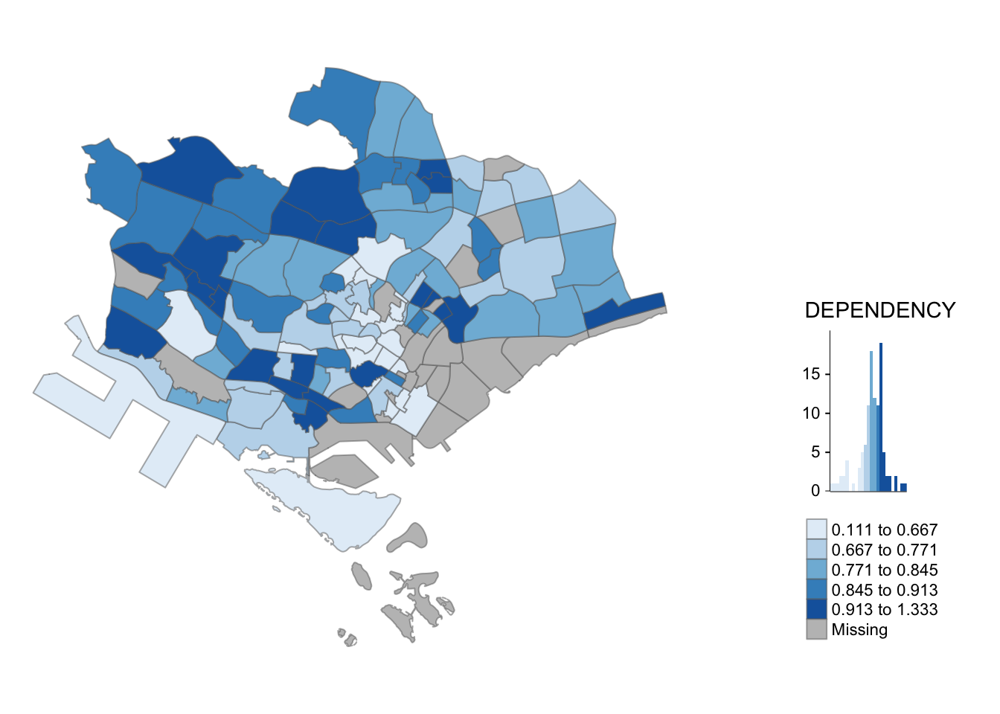

pacman::p_load(sf, tidyverse)Hands-on Exercise 1:Geospatial Data Wrangling and Choropleth Mapping with R
1 Geospatial Data Wrangling
1.1cOverview
In this hands-on exercise, I learn how to import and wrangling geospatial data using appropriate R packages.
1.2 Getting Start
The code chunk below install and load sf and tidyverse packages into R environment
1.3 Importing Geospatial Data
1.3.1 Importing polygon feature data
mpsz = st_read(dsn = "data/geospatial",
layer = "MP14_SUBZONE_WEB_PL")Reading layer `MP14_SUBZONE_WEB_PL' from data source
`/Users/WangYuhui/Desktop/SMU/Special_Term/ISSS624-G1-Applied-Geospatial-Analytics/ISSS624/Hands-on_Ex_1/data/geospatial'
using driver `ESRI Shapefile'
Simple feature collection with 323 features and 15 fields
Geometry type: MULTIPOLYGON
Dimension: XY
Bounding box: xmin: 2667.538 ymin: 15748.72 xmax: 56396.44 ymax: 50256.33
Projected CRS: SVY211.3.2 Importing polyline feature data
cyclingpath = st_read(dsn = "data/geospatial",
layer = "CyclingPathGazette")Reading layer `CyclingPathGazette' from data source
`/Users/WangYuhui/Desktop/SMU/Special_Term/ISSS624-G1-Applied-Geospatial-Analytics/ISSS624/Hands-on_Ex_1/data/geospatial'
using driver `ESRI Shapefile'
Simple feature collection with 2558 features and 2 fields
Geometry type: MULTILINESTRING
Dimension: XY
Bounding box: xmin: 11854.32 ymin: 28347.98 xmax: 42626.09 ymax: 48948.15
Projected CRS: SVY211.3.3 Importing GIS data
preschool = st_read("data/geospatial/PreSchoolsLocation.kml")Reading layer `PRESCHOOLS_LOCATION' from data source
`/Users/WangYuhui/Desktop/SMU/Special_Term/ISSS624-G1-Applied-Geospatial-Analytics/ISSS624/Hands-on_Ex_1/data/geospatial/PreSchoolsLocation.kml'
using driver `KML'
Simple feature collection with 2290 features and 2 fields
Geometry type: POINT
Dimension: XYZ
Bounding box: xmin: 103.6878 ymin: 1.247759 xmax: 103.9897 ymax: 1.462134
z_range: zmin: 0 zmax: 0
Geodetic CRS: WGS 841.4 Checking the Content of A Simple Feature Data Frame
1.4.1 Working with st_geometry()
st_geometry(mpsz)Geometry set for 323 features
Geometry type: MULTIPOLYGON
Dimension: XY
Bounding box: xmin: 2667.538 ymin: 15748.72 xmax: 56396.44 ymax: 50256.33
Projected CRS: SVY21
First 5 geometries:MULTIPOLYGON (((31495.56 30140.01, 31980.96 296...MULTIPOLYGON (((29092.28 30021.89, 29119.64 300...MULTIPOLYGON (((29932.33 29879.12, 29947.32 298...MULTIPOLYGON (((27131.28 30059.73, 27088.33 297...MULTIPOLYGON (((26451.03 30396.46, 26440.47 303...1.4.2 Working with glimpse()
glimpse(mpsz)Rows: 323
Columns: 16
$ OBJECTID <int> 1, 2, 3, 4, 5, 6, 7, 8, 9, 10, 11, 12, 13, 14, 15, 16, 17, …
$ SUBZONE_NO <int> 1, 1, 3, 8, 3, 7, 9, 2, 13, 7, 12, 6, 1, 5, 1, 1, 3, 2, 2, …
$ SUBZONE_N <chr> "MARINA SOUTH", "PEARL'S HILL", "BOAT QUAY", "HENDERSON HIL…
$ SUBZONE_C <chr> "MSSZ01", "OTSZ01", "SRSZ03", "BMSZ08", "BMSZ03", "BMSZ07",…
$ CA_IND <chr> "Y", "Y", "Y", "N", "N", "N", "N", "Y", "N", "N", "N", "N",…
$ PLN_AREA_N <chr> "MARINA SOUTH", "OUTRAM", "SINGAPORE RIVER", "BUKIT MERAH",…
$ PLN_AREA_C <chr> "MS", "OT", "SR", "BM", "BM", "BM", "BM", "SR", "QT", "QT",…
$ REGION_N <chr> "CENTRAL REGION", "CENTRAL REGION", "CENTRAL REGION", "CENT…
$ REGION_C <chr> "CR", "CR", "CR", "CR", "CR", "CR", "CR", "CR", "CR", "CR",…
$ INC_CRC <chr> "5ED7EB253F99252E", "8C7149B9EB32EEFC", "C35FEFF02B13E0E5",…
$ FMEL_UPD_D <date> 2014-12-05, 2014-12-05, 2014-12-05, 2014-12-05, 2014-12-05…
$ X_ADDR <dbl> 31595.84, 28679.06, 29654.96, 26782.83, 26201.96, 25358.82,…
$ Y_ADDR <dbl> 29220.19, 29782.05, 29974.66, 29933.77, 30005.70, 29991.38,…
$ SHAPE_Leng <dbl> 5267.381, 3506.107, 1740.926, 3313.625, 2825.594, 4428.913,…
$ SHAPE_Area <dbl> 1630379.27, 559816.25, 160807.50, 595428.89, 387429.44, 103…
$ geometry <MULTIPOLYGON [m]> MULTIPOLYGON (((31495.56 30..., MULTIPOLYGON (…1.4.3 Working with head()
head(mpsz, n=5) Simple feature collection with 5 features and 15 fields
Geometry type: MULTIPOLYGON
Dimension: XY
Bounding box: xmin: 25867.68 ymin: 28369.47 xmax: 32362.39 ymax: 30435.54
Projected CRS: SVY21
OBJECTID SUBZONE_NO SUBZONE_N SUBZONE_C CA_IND PLN_AREA_N
1 1 1 MARINA SOUTH MSSZ01 Y MARINA SOUTH
2 2 1 PEARL'S HILL OTSZ01 Y OUTRAM
3 3 3 BOAT QUAY SRSZ03 Y SINGAPORE RIVER
4 4 8 HENDERSON HILL BMSZ08 N BUKIT MERAH
5 5 3 REDHILL BMSZ03 N BUKIT MERAH
PLN_AREA_C REGION_N REGION_C INC_CRC FMEL_UPD_D X_ADDR
1 MS CENTRAL REGION CR 5ED7EB253F99252E 2014-12-05 31595.84
2 OT CENTRAL REGION CR 8C7149B9EB32EEFC 2014-12-05 28679.06
3 SR CENTRAL REGION CR C35FEFF02B13E0E5 2014-12-05 29654.96
4 BM CENTRAL REGION CR 3775D82C5DDBEFBD 2014-12-05 26782.83
5 BM CENTRAL REGION CR 85D9ABEF0A40678F 2014-12-05 26201.96
Y_ADDR SHAPE_Leng SHAPE_Area geometry
1 29220.19 5267.381 1630379.3 MULTIPOLYGON (((31495.56 30...
2 29782.05 3506.107 559816.2 MULTIPOLYGON (((29092.28 30...
3 29974.66 1740.926 160807.5 MULTIPOLYGON (((29932.33 29...
4 29933.77 3313.625 595428.9 MULTIPOLYGON (((27131.28 30...
5 30005.70 2825.594 387429.4 MULTIPOLYGON (((26451.03 30...1.5 Plotting the Geospatial Data
plot(mpsz)Warning: plotting the first 9 out of 15 attributes; use max.plot = 15 to plot
all
plot(st_geometry(mpsz))
plot(mpsz["PLN_AREA_N"])
1.6 Working with Projection
1.6.1 Assigning EPSG code to a simple feature data frame
st_crs(mpsz)Coordinate Reference System:
User input: SVY21
wkt:
PROJCRS["SVY21",
BASEGEOGCRS["SVY21[WGS84]",
DATUM["World Geodetic System 1984",
ELLIPSOID["WGS 84",6378137,298.257223563,
LENGTHUNIT["metre",1]],
ID["EPSG",6326]],
PRIMEM["Greenwich",0,
ANGLEUNIT["Degree",0.0174532925199433]]],
CONVERSION["unnamed",
METHOD["Transverse Mercator",
ID["EPSG",9807]],
PARAMETER["Latitude of natural origin",1.36666666666667,
ANGLEUNIT["Degree",0.0174532925199433],
ID["EPSG",8801]],
PARAMETER["Longitude of natural origin",103.833333333333,
ANGLEUNIT["Degree",0.0174532925199433],
ID["EPSG",8802]],
PARAMETER["Scale factor at natural origin",1,
SCALEUNIT["unity",1],
ID["EPSG",8805]],
PARAMETER["False easting",28001.642,
LENGTHUNIT["metre",1],
ID["EPSG",8806]],
PARAMETER["False northing",38744.572,
LENGTHUNIT["metre",1],
ID["EPSG",8807]]],
CS[Cartesian,2],
AXIS["(E)",east,
ORDER[1],
LENGTHUNIT["metre",1,
ID["EPSG",9001]]],
AXIS["(N)",north,
ORDER[2],
LENGTHUNIT["metre",1,
ID["EPSG",9001]]]]mpsz3414 <- st_set_crs(mpsz, 3414)Warning: st_crs<- : replacing crs does not reproject data; use st_transform for
thatst_crs(mpsz3414)Coordinate Reference System:
User input: EPSG:3414
wkt:
PROJCRS["SVY21 / Singapore TM",
BASEGEOGCRS["SVY21",
DATUM["SVY21",
ELLIPSOID["WGS 84",6378137,298.257223563,
LENGTHUNIT["metre",1]]],
PRIMEM["Greenwich",0,
ANGLEUNIT["degree",0.0174532925199433]],
ID["EPSG",4757]],
CONVERSION["Singapore Transverse Mercator",
METHOD["Transverse Mercator",
ID["EPSG",9807]],
PARAMETER["Latitude of natural origin",1.36666666666667,
ANGLEUNIT["degree",0.0174532925199433],
ID["EPSG",8801]],
PARAMETER["Longitude of natural origin",103.833333333333,
ANGLEUNIT["degree",0.0174532925199433],
ID["EPSG",8802]],
PARAMETER["Scale factor at natural origin",1,
SCALEUNIT["unity",1],
ID["EPSG",8805]],
PARAMETER["False easting",28001.642,
LENGTHUNIT["metre",1],
ID["EPSG",8806]],
PARAMETER["False northing",38744.572,
LENGTHUNIT["metre",1],
ID["EPSG",8807]]],
CS[Cartesian,2],
AXIS["northing (N)",north,
ORDER[1],
LENGTHUNIT["metre",1]],
AXIS["easting (E)",east,
ORDER[2],
LENGTHUNIT["metre",1]],
USAGE[
SCOPE["Cadastre, engineering survey, topographic mapping."],
AREA["Singapore - onshore and offshore."],
BBOX[1.13,103.59,1.47,104.07]],
ID["EPSG",3414]]1.6.2 Transforming the projection of preschool from wgs84 to svy21.
preschool3414 <- st_transform(preschool,
crs = 3414)1.7 Importing and Converting An Aspatial Data
1.7.1 Importing the aspatial data
listings <- read_csv("data/aspatial/listings.csv")Rows: 3483 Columns: 18
── Column specification ────────────────────────────────────────────────────────
Delimiter: ","
chr (6): name, host_name, neighbourhood_group, neighbourhood, room_type, l...
dbl (11): id, host_id, latitude, longitude, price, minimum_nights, number_o...
date (1): last_review
ℹ Use `spec()` to retrieve the full column specification for this data.
ℹ Specify the column types or set `show_col_types = FALSE` to quiet this message.list(listings) [[1]]
# A tibble: 3,483 × 18
id name host_id host_name neighbourhood_group neighbourhood latitude
<dbl> <chr> <dbl> <chr> <chr> <chr> <dbl>
1 71609 Villa in… 367042 Belinda East Region Tampines 1.35
2 71896 Home in … 367042 Belinda East Region Tampines 1.35
3 71903 Home in … 367042 Belinda East Region Tampines 1.35
4 275343 Rental u… 1439258 Kay Central Region Bukit Merah 1.29
5 275344 Rental u… 1439258 Kay Central Region Bukit Merah 1.29
6 289234 Home in … 367042 Belinda East Region Tampines 1.34
7 294281 Rental u… 1521514 Elizabeth Central Region Newton 1.31
8 324945 Rental u… 1439258 Kay Central Region Bukit Merah 1.29
9 330095 Rental u… 1439258 Kay Central Region Bukit Merah 1.29
10 369141 Place to… 1521514 Elizabeth Central Region Newton 1.31
# ℹ 3,473 more rows
# ℹ 11 more variables: longitude <dbl>, room_type <chr>, price <dbl>,
# minimum_nights <dbl>, number_of_reviews <dbl>, last_review <date>,
# reviews_per_month <dbl>, calculated_host_listings_count <dbl>,
# availability_365 <dbl>, number_of_reviews_ltm <dbl>, license <chr>1.7.2 Creating a simple feature data frame from an aspatial data frame
listings_sf <- st_as_sf(listings,
coords = c("longitude", "latitude"),
crs=4326) %>%
st_transform(crs = 3414)
glimpse(listings_sf)Rows: 3,483
Columns: 17
$ id <dbl> 71609, 71896, 71903, 275343, 275344, 28…
$ name <chr> "Villa in Singapore · ★4.44 · 2 bedroom…
$ host_id <dbl> 367042, 367042, 367042, 1439258, 143925…
$ host_name <chr> "Belinda", "Belinda", "Belinda", "Kay",…
$ neighbourhood_group <chr> "East Region", "East Region", "East Reg…
$ neighbourhood <chr> "Tampines", "Tampines", "Tampines", "Bu…
$ room_type <chr> "Private room", "Private room", "Privat…
$ price <dbl> 150, 80, 80, 55, 69, 220, 85, 75, 45, 7…
$ minimum_nights <dbl> 92, 92, 92, 60, 60, 92, 92, 60, 60, 92,…
$ number_of_reviews <dbl> 20, 24, 47, 22, 17, 12, 133, 18, 6, 81,…
$ last_review <date> 2020-01-17, 2019-10-13, 2020-01-09, 20…
$ reviews_per_month <dbl> 0.14, 0.16, 0.31, 0.17, 0.12, 0.09, 0.9…
$ calculated_host_listings_count <dbl> 5, 5, 5, 52, 52, 5, 7, 52, 52, 7, 7, 1,…
$ availability_365 <dbl> 89, 89, 89, 275, 274, 89, 365, 365, 365…
$ number_of_reviews_ltm <dbl> 0, 0, 0, 0, 3, 0, 0, 1, 3, 0, 0, 0, 0, …
$ license <chr> NA, NA, NA, "S0399", "S0399", NA, NA, "…
$ geometry <POINT [m]> POINT (41972.5 36390.05), POINT (…1.8 Geoprocessing with sf package
1.8.1 Buffering
buffer_cycling <- st_buffer(cyclingpath,
dist=5, nQuadSegs = 30)
buffer_cycling$AREA <- st_area(buffer_cycling)
sum(buffer_cycling$AREA)1774367 [m^2]1.8.2 Point-in-polygon count
mpsz3414$`PreSch Count`<- lengths(st_intersects(mpsz3414, preschool3414))
summary(mpsz3414$`PreSch Count`) Min. 1st Qu. Median Mean 3rd Qu. Max.
0.00 0.00 4.00 7.09 10.00 72.00 top_n(mpsz3414, 1, `PreSch Count`)Simple feature collection with 1 feature and 16 fields
Geometry type: MULTIPOLYGON
Dimension: XY
Bounding box: xmin: 39655.33 ymin: 35966 xmax: 42940.57 ymax: 38622.37
Projected CRS: SVY21 / Singapore TM
OBJECTID SUBZONE_NO SUBZONE_N SUBZONE_C CA_IND PLN_AREA_N PLN_AREA_C
1 189 2 TAMPINES EAST TMSZ02 N TAMPINES TM
REGION_N REGION_C INC_CRC FMEL_UPD_D X_ADDR Y_ADDR SHAPE_Leng
1 EAST REGION ER 21658EAAF84F4D8D 2014-12-05 41122.55 37392.39 10180.62
SHAPE_Area geometry PreSch Count
1 4339824 MULTIPOLYGON (((42196.76 38... 72mpsz3414$Area <- mpsz3414 %>%
st_area()
mpsz3414 <- mpsz3414 %>%
mutate(`PreSch Density` = `PreSch Count`/Area * 1000000)1.9 Explorotary Data Analysis (EDA)
hist(mpsz3414$`PreSch Density`)
ggplot(data=mpsz3414,
aes(x= as.numeric(`PreSch Density`)))+
geom_histogram(bins=20,
color="black",
fill="light blue") +
labs(title = "Are pre-school even distributed in Singapore?",
subtitle= "There are many planning sub-zones with a single pre-school, on the other hand, \nthere are two planning sub-zones with at least 20 pre-schools",
x = "Pre-school density (per km sq)",
y = "Frequency")
ggplot(data=mpsz3414,
aes(y = `PreSch Count`,
x= as.numeric(`PreSch Density`)))+
geom_point(color="black",
fill="light blue") +
xlim(0, 40) +
ylim(0, 40) +
labs(title = "",
x = "Pre-school density (per km sq)",
y = "Pre-school count")Warning: Removed 2 rows containing missing values (`geom_point()`).
2 Choropleth Mapping with R
2.1 Overview
Choropleth mapping involves the symbolisation of enumeration units, such as countries, provinces, states, counties or census units, using area patterns or graduated colors. For example, a social scientist may need to use a choropleth map to portray the spatial distribution of aged population of Singapore by Master Plan 2014 Subzone Boundary.
In this chapter, you will learn how to plot functional and truthful choropleth maps by using an R package called **tmap** package.
2.1.1 Survival Tip
It is advisable for you to read the functional description of each function before using them.
2.2 Getting Started
In this hands-on exercise, the key R package use is tmap package in R. Beside tmap package, four other R packages will be used. They are:
readr for importing delimited text file,
tidyr for tidying data,
dplyr for wrangling data and
sf for handling geospatial data.
Among the four packages, readr, tidyr and dplyr are part of tidyverse package.
The code chunk below will be used to install and load these packages in RStudio.
pacman::p_load(sf, tmap, tidyverse)2.3 Importing Data into R
2.3.1 Importing Geospatial Data into R
The code chunk below uses the st_read() function of sf package to import MP14_SUBZONE_WEB_PL shapefile into R as a simple feature data frame called mpsz.
mpsz <- st_read(dsn = "data/geospatial",
layer = "MP14_SUBZONE_WEB_PL")Reading layer `MP14_SUBZONE_WEB_PL' from data source
`/Users/WangYuhui/Desktop/SMU/Special_Term/ISSS624-G1-Applied-Geospatial-Analytics/ISSS624/Hands-on_Ex_1/data/geospatial'
using driver `ESRI Shapefile'
Simple feature collection with 323 features and 15 fields
Geometry type: MULTIPOLYGON
Dimension: XY
Bounding box: xmin: 2667.538 ymin: 15748.72 xmax: 56396.44 ymax: 50256.33
Projected CRS: SVY21mpszSimple feature collection with 323 features and 15 fields
Geometry type: MULTIPOLYGON
Dimension: XY
Bounding box: xmin: 2667.538 ymin: 15748.72 xmax: 56396.44 ymax: 50256.33
Projected CRS: SVY21
First 10 features:
OBJECTID SUBZONE_NO SUBZONE_N SUBZONE_C CA_IND PLN_AREA_N
1 1 1 MARINA SOUTH MSSZ01 Y MARINA SOUTH
2 2 1 PEARL'S HILL OTSZ01 Y OUTRAM
3 3 3 BOAT QUAY SRSZ03 Y SINGAPORE RIVER
4 4 8 HENDERSON HILL BMSZ08 N BUKIT MERAH
5 5 3 REDHILL BMSZ03 N BUKIT MERAH
6 6 7 ALEXANDRA HILL BMSZ07 N BUKIT MERAH
7 7 9 BUKIT HO SWEE BMSZ09 N BUKIT MERAH
8 8 2 CLARKE QUAY SRSZ02 Y SINGAPORE RIVER
9 9 13 PASIR PANJANG 1 QTSZ13 N QUEENSTOWN
10 10 7 QUEENSWAY QTSZ07 N QUEENSTOWN
PLN_AREA_C REGION_N REGION_C INC_CRC FMEL_UPD_D X_ADDR
1 MS CENTRAL REGION CR 5ED7EB253F99252E 2014-12-05 31595.84
2 OT CENTRAL REGION CR 8C7149B9EB32EEFC 2014-12-05 28679.06
3 SR CENTRAL REGION CR C35FEFF02B13E0E5 2014-12-05 29654.96
4 BM CENTRAL REGION CR 3775D82C5DDBEFBD 2014-12-05 26782.83
5 BM CENTRAL REGION CR 85D9ABEF0A40678F 2014-12-05 26201.96
6 BM CENTRAL REGION CR 9D286521EF5E3B59 2014-12-05 25358.82
7 BM CENTRAL REGION CR 7839A8577144EFE2 2014-12-05 27680.06
8 SR CENTRAL REGION CR 48661DC0FBA09F7A 2014-12-05 29253.21
9 QT CENTRAL REGION CR 1F721290C421BFAB 2014-12-05 22077.34
10 QT CENTRAL REGION CR 3580D2AFFBEE914C 2014-12-05 24168.31
Y_ADDR SHAPE_Leng SHAPE_Area geometry
1 29220.19 5267.381 1630379.3 MULTIPOLYGON (((31495.56 30...
2 29782.05 3506.107 559816.2 MULTIPOLYGON (((29092.28 30...
3 29974.66 1740.926 160807.5 MULTIPOLYGON (((29932.33 29...
4 29933.77 3313.625 595428.9 MULTIPOLYGON (((27131.28 30...
5 30005.70 2825.594 387429.4 MULTIPOLYGON (((26451.03 30...
6 29991.38 4428.913 1030378.8 MULTIPOLYGON (((25899.7 297...
7 30230.86 3275.312 551732.0 MULTIPOLYGON (((27746.95 30...
8 30222.86 2208.619 290184.7 MULTIPOLYGON (((29351.26 29...
9 29893.78 6571.323 1084792.3 MULTIPOLYGON (((20996.49 30...
10 30104.18 3454.239 631644.3 MULTIPOLYGON (((24472.11 29...2.3.2 Importing Attribute Data into R
Next, we will import respopagsex2011to2020.csv file into RStudio and save the file into an R dataframe called popdata.
The task will be performed by using read_csv() function of readr package as shown in the code chunk below.
popdata <- read_csv("data/aspatial/respopagesextod2011to2020.csv")Rows: 984656 Columns: 7
── Column specification ────────────────────────────────────────────────────────
Delimiter: ","
chr (5): PA, SZ, AG, Sex, TOD
dbl (2): Pop, Time
ℹ Use `spec()` to retrieve the full column specification for this data.
ℹ Specify the column types or set `show_col_types = FALSE` to quiet this message.2.3.3 Data Preparation
Before a thematic map can be prepared, you are required to prepare a data table with year 2020 values. The data table should include the variables PA, SZ, YOUNG, ECONOMY ACTIVE, AGED, TOTAL, DEPENDENCY.
YOUNG: age group 0 to 4 until age groyup 20 to 24,
ECONOMY ACTIVE: age group 25-29 until age group 60-64,
AGED: age group 65 and above,
TOTAL: all age group, and
DEPENDENCY: the ratio between young and aged against economy active group
2.3.3.1 Data wrangling
The following data wrangling and transformation functions will be used:
pivot_wider() of tidyr package, and
mutate(), filter(), group_by() and select() of dplyr package
popdata2020 <- popdata %>%
filter(Time == 2020) %>%
group_by(PA, SZ, AG) %>%
summarise(`POP` = sum(`Pop`)) %>%
ungroup()%>%
pivot_wider(names_from=AG,
values_from=POP) %>%
mutate(YOUNG = rowSums(.[3:6])
+rowSums(.[12])) %>%
mutate(`ECONOMY ACTIVE` = rowSums(.[7:11])+
rowSums(.[13:15]))%>%
mutate(`AGED`=rowSums(.[16:21])) %>%
mutate(`TOTAL`=rowSums(.[3:21])) %>%
mutate(`DEPENDENCY` = (`YOUNG` + `AGED`)
/`ECONOMY ACTIVE`) %>%
select(`PA`, `SZ`, `YOUNG`,
`ECONOMY ACTIVE`, `AGED`,
`TOTAL`, `DEPENDENCY`)`summarise()` has grouped output by 'PA', 'SZ'. You can override using the
`.groups` argument.popdata2020# A tibble: 332 × 7
PA SZ YOUNG `ECONOMY ACTIVE` AGED TOTAL DEPENDENCY
<chr> <chr> <dbl> <dbl> <dbl> <dbl> <dbl>
1 Ang Mo Kio Ang Mo Kio Town Cen… 1440 2610 760 4810 0.843
2 Ang Mo Kio Cheng San 6640 15460 6050 28150 0.821
3 Ang Mo Kio Chong Boon 6150 13950 6470 26570 0.905
4 Ang Mo Kio Kebun Bahru 5540 12090 5120 22750 0.882
5 Ang Mo Kio Sembawang Hills 2100 3410 1310 6820 1
6 Ang Mo Kio Shangri-La 3960 8420 3610 15990 0.899
7 Ang Mo Kio Tagore 2220 4200 1530 7950 0.893
8 Ang Mo Kio Townsville 4690 11450 5100 21240 0.855
9 Ang Mo Kio Yio Chu Kang 0 0 0 0 NaN
10 Ang Mo Kio Yio Chu Kang East 1220 2300 750 4270 0.857
# ℹ 322 more rows2.3.3.2 Joining the attribute data and geospatial data
Before we can perform the georelational join, one extra step is required to convert the values in PA and SZ fields to uppercase. This is because the values of PA and SZ fields are made up of upper- and lowercase. On the other, hand the SUBZONE_N and PLN_AREA_N are in uppercase.
popdata2020 <- popdata2020 %>%
mutate_at(.vars = vars(PA, SZ),
.funs = list(toupper)) %>%
filter(`ECONOMY ACTIVE` > 0)popdata2020# A tibble: 234 × 7
PA SZ YOUNG `ECONOMY ACTIVE` AGED TOTAL DEPENDENCY
<chr> <chr> <dbl> <dbl> <dbl> <dbl> <dbl>
1 ANG MO KIO ANG MO KIO TOWN CEN… 1440 2610 760 4810 0.843
2 ANG MO KIO CHENG SAN 6640 15460 6050 28150 0.821
3 ANG MO KIO CHONG BOON 6150 13950 6470 26570 0.905
4 ANG MO KIO KEBUN BAHRU 5540 12090 5120 22750 0.882
5 ANG MO KIO SEMBAWANG HILLS 2100 3410 1310 6820 1
6 ANG MO KIO SHANGRI-LA 3960 8420 3610 15990 0.899
7 ANG MO KIO TAGORE 2220 4200 1530 7950 0.893
8 ANG MO KIO TOWNSVILLE 4690 11450 5100 21240 0.855
9 ANG MO KIO YIO CHU KANG EAST 1220 2300 750 4270 0.857
10 ANG MO KIO YIO CHU KANG WEST 6590 12850 4680 24120 0.877
# ℹ 224 more rowsNext, left_join() of dplyr is used to join the geographical data and attribute table using planning subzone name e.g. SUBZONE_N and SZ as the common identifier.
mpsz_pop2020 <- left_join(mpsz, popdata2020,
by = c("SUBZONE_N" = "SZ"))write_rds(mpsz_pop2020, "data/rds/mpszpop2020.rds")2.4 Choropleth Mapping Geospatial Data Using tmap
Two approaches can be used to prepare thematic map using tmap, they are:
Plotting a thematic map quickly by using qtm().
Plotting highly customisable thematic map by using tmap elements.
2.4.1 Plotting a choropleth map quickly by using qtm()
The easiest and quickest to draw a choropleth map using tmap is using qtm(). It is concise and provides a good default visualisation in many cases.
tmap_mode("plot")tmap mode set to plottingqtm(mpsz_pop2020,
fill = "DEPENDENCY")
2.4.2 Creating a choropleth map by using tmap’s elements
Despite its usefulness of drawing a choropleth map quickly and easily, the disadvantge of qtm() is that it makes aesthetics of individual layers harder to control. To draw a high quality cartographic choropleth map as shown in the figure below, tmap’s drawing elements should be used.
tm_shape(mpsz_pop2020)+
tm_fill("DEPENDENCY",
style = "quantile",
palette = "Blues",
title = "Dependency ratio") +
tm_layout(main.title = "Distribution of Dependency Ratio by planning subzone",
main.title.position = "center",
main.title.size = 1.2,
legend.height = 0.45,
legend.width = 0.35,
frame = TRUE) +
tm_borders(alpha = 0.5) +
tm_compass(type="8star", size = 2) +
tm_scale_bar() +
tm_grid(alpha =0.2) +
tm_credits("Source: Planning Sub-zone boundary from Urban Redevelopment Authorithy (URA)\n and Population data from Department of Statistics DOS",
position = c("left", "bottom"))
In the following sub-section, we will share with you tmap functions that used to plot these elements.
2.4.2.1 Drawing a base map
The basic building block of tmap is tm_shape() followed by one or more layer elemments such as tm_fill() and tm_polygons().
In the code chunk below, tm_shape() is used to define the input data (i.e mpsz_pop2020) and tm_polygons() is used to draw the planning subzone polygons
tm_shape(mpsz_pop2020) +
tm_polygons()
2.4.2.2 Drawing a choropleth map using tm_polygons()
To draw a choropleth map showing the geographical distribution of a selected variable by planning subzone, we just need to assign the target variable such as Dependency to tm_polygons().
tm_shape(mpsz_pop2020)+
tm_polygons("DEPENDENCY")
2.4.2.3 Drawing a choropleth map using tm_fill() and *tm_border()**
Actually, tm_polygons() is a wraper of tm_fill() and tm_border(). tm_fill() shades the polygons by using the default colour scheme and tm_borders() adds the borders of the shapefile onto the choropleth map.
tm_shape(mpsz_pop2020)+
tm_fill("DEPENDENCY")
Notice that the planning subzones are shared according to the respective dependecy values
To add the boundary of the planning subzones, tm_borders will be used as shown in the code chunk below.
tm_shape(mpsz_pop2020)+
tm_fill("DEPENDENCY") +
tm_borders(lwd = 0.1, alpha = 1)
Notice that light-gray border lines have been added on the choropleth map.
The alpha argument is used to define transparency number between 0 (totally transparent) and 1 (not transparent). By default, the alpha value of the col is used (normally 1).
Beside alpha argument, there are three other arguments for tm_borders(), they are:
col = border colour,
lwd = border line width. The default is 1, and
lty = border line type. The default is “solid”.
2.4.3 Data classification methods of tmap
Most choropleth maps employ some methods of data classification. The point of classification is to take a large number of observations and group them into data ranges or classes.
tmap provides a total ten data classification methods, namely: fixed, sd, equal, pretty (default), quantile, kmeans, hclust, bclust, fisher, and jenks.
To define a data classification method, the style argument of tm_fill() or tm_polygons() will be used.
2.4.3.1 Plotting choropleth maps with built-in classification methods
The code chunk below shows a quantile data classification that used 5 classes.
tm_shape(mpsz_pop2020)+
tm_fill("DEPENDENCY",
n = 5,
style = "jenks") +
tm_borders(alpha = 0.5)
tm_shape(mpsz_pop2020)+
tm_fill("DEPENDENCY",
n = 5,
style = "equal") +
tm_borders(alpha = 0.5)
tm_shape(mpsz_pop2020)+
tm_fill("DEPENDENCY",
n = 20,
style = "kmeans") +
tm_borders(alpha = 0.5)
parameters of style can be fixed, sd, equal, pretty (default), quantile, kmeans, hclust, bclust, fisher, and jenks.
2.4.3.2 Plotting choropleth map with custome break
For all the built-in styles, the category breaks are computed internally. In order to override these defaults, the breakpoints can be set explicitly by means of the breaks argument to the tm_fill(). It is important to note that, in tmap the breaks include a minimum and maximum. As a result, in order to end up with n categories, n+1 elements must be specified in the breaks option (the values must be in increasing order).
Before we get started, it is always a good practice to get some descriptive statistics on the variable before setting the break points. Code chunk below will be used to compute and display the descriptive statistics of DEPENDENCY field.
summary(mpsz_pop2020$DEPENDENCY) Min. 1st Qu. Median Mean 3rd Qu. Max. NA's
0.1111 0.7147 0.7866 0.8585 0.8763 19.0000 92 With reference to the results above, we set break point at 0.60, 0.70, 0.80, and 0.90. In addition, we also need to include a minimum and maximum, which we set at 0 and 100. Our breaks vector is thus c(0, 0.60, 0.70, 0.80, 0.90, 1.00)
Now, we will plot the choropleth map by using the code chunk below.
tm_shape(mpsz_pop2020)+
tm_fill("DEPENDENCY",
breaks = c(0, 0.60, 0.70, 0.80, 0.90, 1.00)) +
tm_borders(alpha = 0.5)Warning: Values have found that are higher than the highest break
2.4.4 Colour Scheme
tmap supports colour ramps either defined by the user or a set of predefined colour ramps from the RColorBrewer package.
2.4.4.1 Using ColourBrewer palette
To change the colour, we assign the preferred colour to palette argument of tm_fill() as shown in the code chunk below.
tm_shape(mpsz_pop2020)+
tm_fill("DEPENDENCY",
n = 6,
style = "quantile",
palette = "Blues") +
tm_borders(alpha = 0.5)
To reverse the colour shading, add a “-” prefix.
tm_shape(mpsz_pop2020)+
tm_fill("DEPENDENCY",
style = "quantile",
palette = "-Blues") +
tm_borders(alpha = 0.5)
2.4.5 Map Layouts
Map layout refers to the combination of all map elements into a cohensive map. Map elements include among others the objects to be mapped, the title, the scale bar, the compass, margins and aspects ratios. Colour settings and data classification methods covered in the previous section relate to the palette and break-points are used to affect how the map looks.
2.4.5.1 Map Legend
In tmap, several legend options are provided to change the placement, format and appearance of the legend.
tm_shape(mpsz_pop2020)+
tm_fill("DEPENDENCY",
style = "jenks",
palette = "Blues",
legend.hist = TRUE,
legend.is.portrait = TRUE,
legend.hist.z = 0.1) +
tm_layout(main.title = "Distribution of Dependency Ratio by planning subzone \n(Jenks classification)",
main.title.position = "center",
main.title.size = 1,
legend.height = 0.45,
legend.width = 0.35,
legend.outside = FALSE,
legend.position = c("right", "bottom"),
frame = FALSE) +
tm_borders(alpha = 0.5)
2.4.5.2 Map style
tmap allows a wide variety of layout settings to be changed. They can be called by using tmap_style().
The code chunk below shows the classic style is used.
tm_shape(mpsz_pop2020)+
tm_fill("DEPENDENCY",
style = "quantile",
palette = "-Blues") +
tm_borders(alpha = 0.5) +
tmap_style("natural")tmap style set to "natural"other available styles are: "white", "gray", "cobalt", "col_blind", "albatross", "beaver", "bw", "classic", "watercolor" 
2.4.5.3 Cartographic Furniture
Beside map style, tmap also also provides arguments to draw other map furniture such as compass, scale bar and grid lines.
In the code chunk below, tm_compass(), tm_scale_bar() and tm_grid() are used to add compass, scale bar and grid lines onto the choropleth map.
tm_shape(mpsz_pop2020)+
tm_fill("DEPENDENCY",
style = "quantile",
palette = "Blues",
title = "No. of persons") +
tm_layout(main.title = "Distribution of Dependency Ratio \nby planning subzone",
main.title.position = "center",
main.title.size = 1.2,
legend.height = 0.45,
legend.width = 0.35,
frame = TRUE) +
tm_borders(alpha = 0.5) +
tm_compass(type="8star", size = 2) +
tm_scale_bar(width = 0.15) +
tm_grid(lwd = 0.1, alpha = 0.2) +
tm_credits("Source: Planning Sub-zone boundary from Urban Redevelopment Authorithy (URA)\n and Population data from Department of Statistics DOS",
position = c("left", "bottom"))
To reset the default style, refer to the code chunk below.
tmap_style("white")tmap style set to "white"other available styles are: "gray", "natural", "cobalt", "col_blind", "albatross", "beaver", "bw", "classic", "watercolor" 2.4.6 Drawing Small Multiple Choropleth Maps
Small multiple maps, also referred to as facet maps, are composed of many maps arrange side-by-side, and sometimes stacked vertically. Small multiple maps enable the visualisation of how spatial relationships change with respect to another variable, such as time.
In tmap, small multiple maps can be plotted in three ways:
by assigning multiple values to at least one of the asthetic arguments,
by defining a group-by variable in tm_facets(), and
by creating multiple stand-alone maps with tmap_arrange().
2.4.6.1 By assigning multiple values to at least one of the aesthetic arguments
In this example, small multiple choropleth maps are created by defining ncols in tm_fill()
tm_shape(mpsz_pop2020)+
tm_fill(c("YOUNG", "AGED"),
style = "equal",
palette = "Blues") +
tm_layout(legend.position = c("right", "bottom")) +
tm_borders(alpha = 0.5) +
tmap_style("white")tmap style set to "white"other available styles are: "gray", "natural", "cobalt", "col_blind", "albatross", "beaver", "bw", "classic", "watercolor" 
In this example, small multiple choropleth maps are created by assigning multiple values to at least one of the aesthetic arguments
tm_shape(mpsz_pop2020)+
tm_polygons(c("DEPENDENCY","AGED"),
style = c("equal", "quantile"),
palette = list("Blues","Greens")) +
tm_layout(legend.position = c("right", "bottom"))
2.4.6.2 By defining a group-by variable in tm_facets()
In this example, multiple small choropleth maps are created by using tm_facets().
tm_shape(mpsz_pop2020) +
tm_fill("DEPENDENCY",
style = "quantile",
palette = "Blues",
thres.poly = 0) +
tm_facets(by="REGION_N",
free.coords=TRUE,
drop.shapes=TRUE) +
tm_layout(legend.show = FALSE,
title.position = c("center", "center"),
title.size = 20) +
tm_borders(alpha = 0.5)Warning: The argument drop.shapes has been renamed to drop.units, and is
therefore deprecated
2.4.6.3 By creating multiple stand-alone maps with tmap_arrange()
In this example, multiple small choropleth maps are created by creating multiple stand-alone maps with tmap_arrange().
youngmap <- tm_shape(mpsz_pop2020)+
tm_polygons("YOUNG",
style = "quantile",
palette = "Blues")
agedmap <- tm_shape(mpsz_pop2020)+
tm_polygons("AGED",
style = "quantile",
palette = "Blues")
tmap_arrange(youngmap, agedmap, asp=1, ncol=2)
2.4.7 Mappping Spatial Object Meeting a Selection Criterion
Instead of creating small multiple choropleth map, you can also use selection funtion to map spatial objects meeting the selection criterion.
tm_shape(mpsz_pop2020[mpsz_pop2020$REGION_N=="CENTRAL REGION", ])+
tm_fill("DEPENDENCY",
style = "quantile",
palette = "Blues",
legend.hist = TRUE,
legend.is.portrait = TRUE,
legend.hist.z = 0.1) +
tm_layout(legend.outside = TRUE,
legend.height = 0.45,
legend.width = 5.0,
legend.position = c("right", "bottom"),
frame = FALSE) +
tm_borders(alpha = 0.5)Warning in pre_process_gt(x, interactive = interactive, orig_crs =
gm$shape.orig_crs): legend.width controls the width of the legend within a map.
Please use legend.outside.size to control the width of the outside legend